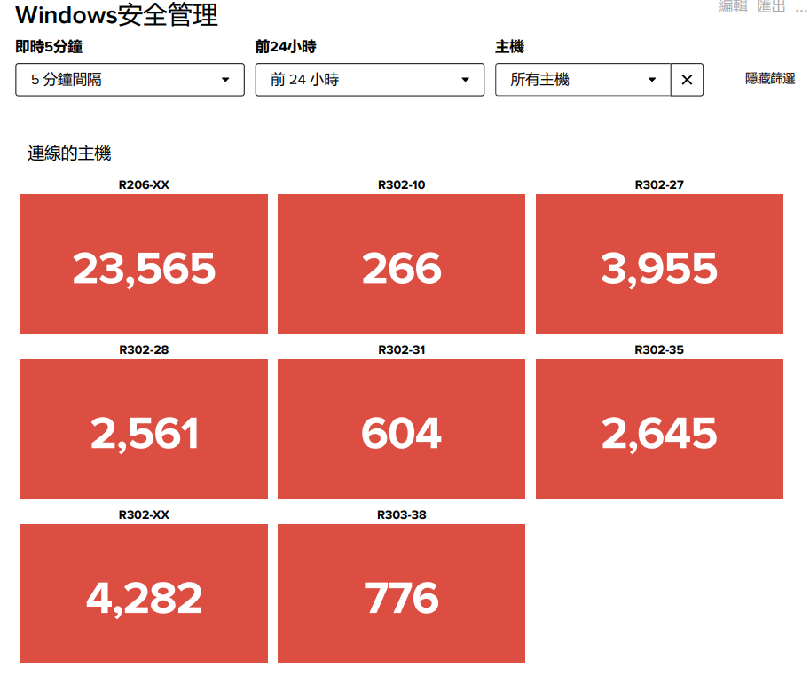
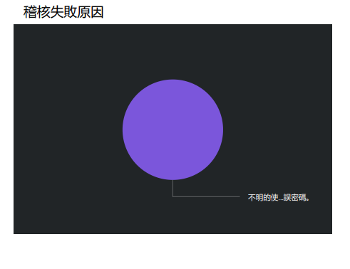
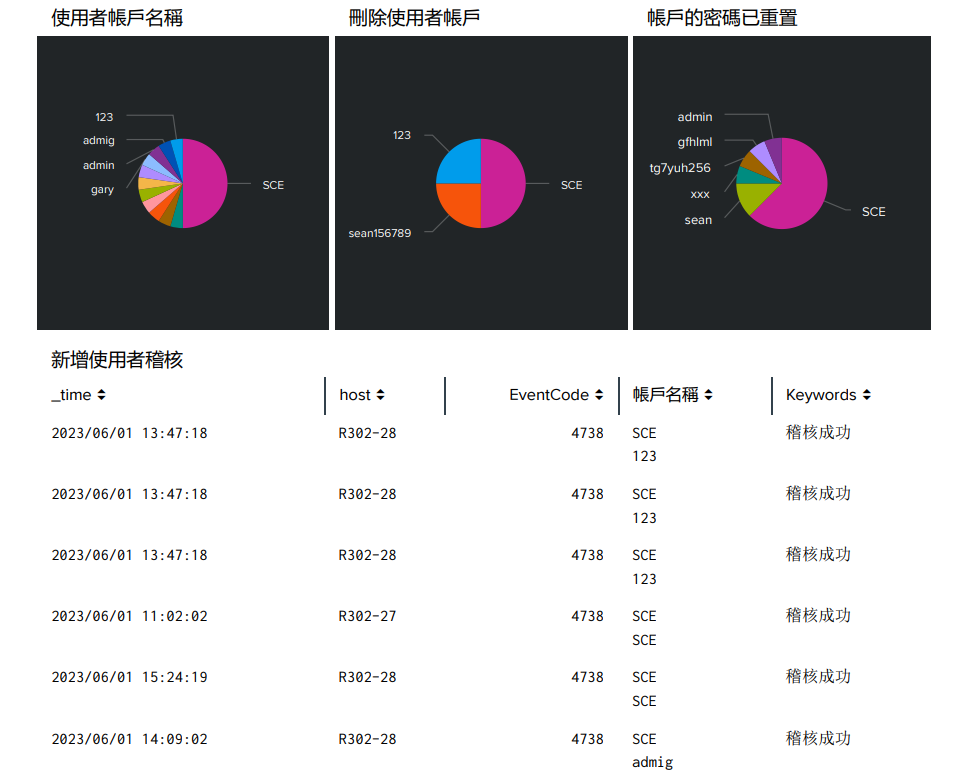

系統建置及相關資料處理操作
系統環境 ubuntu20.04 , Windows2019
- Web 伺服器系統
- 設定 Web 伺服器：設定主機名、虛擬主機、SSL/TLS 加密、伺服器監聽埠等。
- 設定網站目錄和檔案權限：在 Linux 作業系統安裝 Apache，編輯PHP的設定檔 php.ini，調整最大上傳檔案大小和時區設定;使用 PHP 來處理用戶輸入，連接 MySQL 資料庫，建立互動式網頁。
-
FTP 伺服器系統
- 設定伺服器：在 Linux 作業系統安裝 vsftpd 後，在 FTP 設定檔設定匿名存取、使用者存取控制、埠號等。
- 建立使用者帳戶：建立 FTP 使用者帳戶，使用系統的使用者管理工具useradd 建立本機使用者帳戶。
- 設定使用者存取權限：確保 FTP 使用者帳戶有權限存取其所需的目錄。設定每個使用者的根目錄，限制存取權限和權限組合。
- Mail 伺服器系統
- 設定伺服器：在 Linux 作業系統安裝 Postfix 後，在 Postfix 設定檔設定郵件轉送、域名設定、郵件路由和轉送等。
- 建立使用者帳戶：建立 Mail 使用者帳戶，使用系統的使用者管理工具useradd 建立本機使用者帳戶。
- 設定郵件存儲：郵件伺服器有正確的郵件存儲設定，設定郵件存儲在本機或使用外部郵件存儲方式和格式。
- 關聯式資料庫
- MariaDB: 在 Linux 作業系統上架設 MariaDB 以及 phpMyAdmin 資料庫管理工具，熟悉 SQL 指令以進行資料庫運維以及資料處理。
- 非關聯式資料庫
- MongoDB: 在 Windows 作業系統上架設 MongoDB，並熟悉資料庫運維、資料處理之相關指令。
- DevOps 開發維運
- Ansible: 通過 SSH 連接到遠端主機並使用 YAML 文件描述的配置和任務，執行集中化管理。
- GitHub:使用 GitHub Actions 的內置 CI/CD 服務，熟悉自動化架構、測試、部署應用程序。
- Git 應用
- 使用 Git 熟悉版本控制、分支管理及協同開發的基本指令。
- 雲端計算平台
- 使用 AWS 創建 EC2 建立 Web 伺服器並對爬蟲程式設定 Crontab 工作排程。
- 使用 GCP 開通創建 Big Query 創建資料集，並用 Python 爬蟲並匯入。
- 資料視覺化
- 使用 HTML、CSS 搭配 JavaScript 前端框架建構網頁。
Python 應用
- 網頁爬蟲
- 使用 Requests、beautifulsoup4 等函式庫撰寫程式爬取科技新報的內容，
驅動瀏覽器並模仿使用者的各項行為選取特定網頁內容，透過 Pymysql 函
式庫將資料匯入資料庫。
- 在 Linux 上設定 Crontab，對爬蟲程式進行工作排程，實現定時且自動爬取
網頁內容之目的。
- 資料預處理及探勘
- 使用 Pandas、Numpy 函式庫進行資料預處理及統計運算。
- 使用 sklearn 函式庫的線性迴歸及邏輯迴歸模型進行機器學習。
- 臉部辨識
- 使用 OpenCV 函式庫內置的臉部識別器 Haar 级聯分類器進行臉部辨識分析。
- 使用 TensorFlow 函式庫建立卷積神經網絡 (Convolutional Neural Network, CNN) 使用學習的模型進行臉部辨識辨識。
- Flask API 代辦事項管理應用程式
- 使用 Python 的 Flask 框架建立，並連接到 MySQL 資料庫來儲存使用者資料和代辦事項，以下為主要功能:
-
使用者註冊和登入：透過/api/register 和/api/login 端點進行註冊和登入。使用者登出：使用/api/logout 端點登出應用程式，即清除 session 中的使用者 ID。新增代辦事項：登入後的使用者可以透過/api/todos 端點新增代辦事項。使用者需提供代辦事項的內容，並且必須先登入才能新增代辦事項。獲取代辦事項列表：透過/api/todos 端點獲取自己的代辦事項列表。編輯代辦事項：透過/api/todos/ 端點編輯自己的代辦事項。
- Docker 容器管理與建置
- 在 Linux 作業系統上架設 Docker server，熟悉 Docker 指令以進行容器維運以，使用 Dockerfile，撰寫定義映像的結構，例如:基本映像、複製文件、安裝軟體、設定環境等，使用 docker build 命令從 Dockerfile 建置映像，建置映像後，使用 docker tag 命令給映像打上標籤，最後使用 docker push 命令將映像推送到 Docker Hub。
- 大數據分析平台
- ELK:在 Linux 作業系統安裝 Elasticsearch、Logstash 及 Kibana，使用Elasticsearch 查詢和存儲索引日誌數據，讓數據更方便分析，使用 Kibana 將日誌數據建立圖表、圖形幫助用戶直觀的分析數據與即時監控。
- Splunk: 在 Linux 作業系統安裝 Splunk，分析 fail2ban.log 使用索引大量的日誌數據，並建立儀表板幫助用戶直觀的分析數據與即時監控。在 windows 作業系統，Splunk 監控使用者名稱、刪除使用者、使用者帳戶重置等，並實時報告性能指標。
下載Splunk作品檔案


